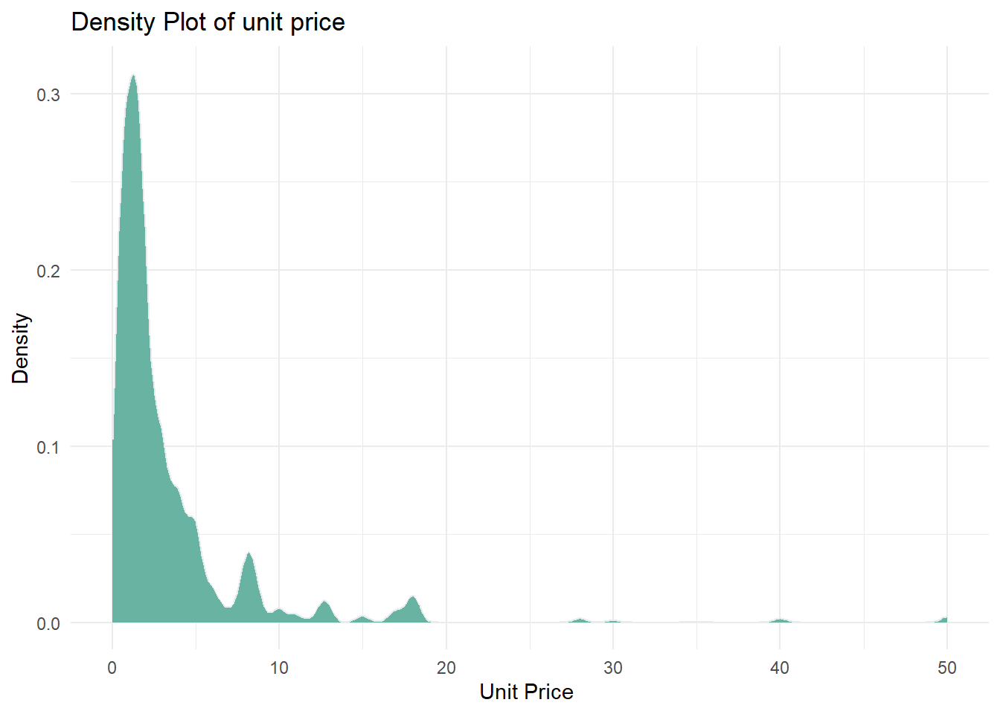
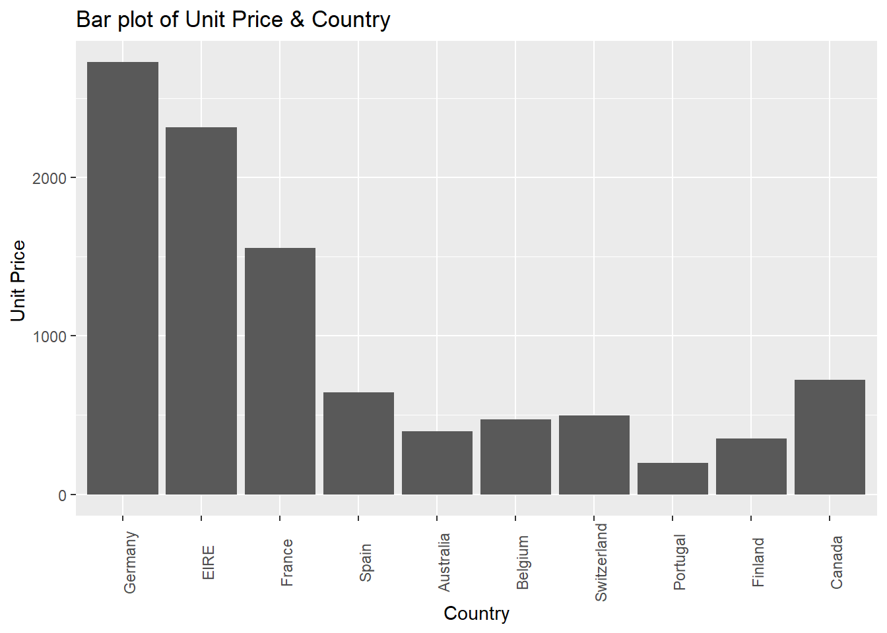

load("data/e_commerce_2011.Rdata")STAT 244-SC
Introduction
This project explores transactions from a UK-based online retail store, covering the time frame from December 1, 2010, to December 9, 2011. The store specializes in unique, all-occasion gift items, and the dataset contains over 540,000 rows of transaction data. I found this dataset in https://www.kaggle.com/datasets/carrie1/ecommerce-data.
The quantitative variables in this data set are:
- Quantity: The number of units of each product purchased. Unit: Count (integer).
- UnitPrice: The price of a single product. Unit: British Pounds Sterling (GBP).
- TotalPrice (we can create this column): The total value of each transaction (Quantity * UnitPrice). Unit: British Pounds Sterling (GBP)
The categorical variables present in this dataset are:
- Description: The name or description of the product.
- Country: The country where the customer resides.
- Stock code: The code for each product (item).
Data Context and Data Cleaning
The quantitative aspects I am interested in exploring are: Quantity and Unit Price. Quantity refers to the number of units of each product purchased, while Unit Price is the cost of a single product. Unit: British Pounds Sterling (GBP). Regarding categorical data, I am focused on the Country variable, which indicates where the customer resides. The categories are: France, the United Kingdom, and Australia. The analysis examines the relationship between unit price and purchasing behavior across countries.
As mentioned, the dataset contains approximately 540,000 rows, with each row representing a single item within a transaction. Due to the size of the dataset, it was challenging to visualize the relationship between unit price and country. To address this, I focused on transactions from July and August 2011 and filtered out countries with minimal purchasing activity. Additionally, I excluded the United Kingdom, which dominated the dataset with around 200,000 rows, introducing outliers that made it difficult to interpret purchasing behavior in other countries. These filters allowed for a more balanced analysis of the data. This helps to understand the dataset better, along with countries’ purchasing behavior. To explore this, I created a density plot to visualize price distribution and a bar plot to show purchase quantities by country.
summary(e_commerce_2011$quantity) Min. 1st Qu. Median Mean 3rd Qu. Max.
1.00 6.00 12.00 19.46 16.00 432.00 #(e_commerce_2011$unit_price)
#stats::var(e_commerce_2011$unit_price)
#stats::IQR(e_commerce_2011$unit_price)Data visualization
e_commerce_2011 |>
ggplot( aes(x= unit_price)) +
geom_density(fill="#69b3a2", color="#e9ecef") + xlim(0,50)+
labs(
title = "Density Plot of unit price",
x = "Unit Price ",
y = "Density"
) +
theme_minimal()Warning: Removed 3 rows containing non-finite outside the scale range
(`stat_density()`).
This density plot of unit price reveals a right-skewed distribution, indicating that most transactions involved low-priced products. The peak occurs between £0 and £5, suggesting that customers—across multiple countries—tend to purchase inexpensive gift items. A smaller number of transactions occur around £10–£20, with very few purchases above £30, and some outliers close to £50. This pattern highlights a general preference for lower-cost products, though a small portion of customers are willing to spend more on select items.
library(forcats)
ggplot(e_commerce_2011, aes(x= fct_infreq(country), y=unit_price)) +
geom_bar(stat = "identity") +
labs(
title = "Bar plot of Unit Price & Country",
x = "Country",
y = "Unit Price "
) +
theme(axis.text.x = element_text(angle = 90))
This bar plot shows the total unit price of purchases across different countries after excluding the United Kingdom. Germany emerges as the highest buyer, followed closely by EIRE (Ireland) and France, suggesting stronger purchasing activity in these regions. On the other end, Portugal shows the lowest total unit price, followed by Finland and Australia, indicating fewer or smaller transactions. This visualization helps highlight regional purchasing trends and emphasizes countries that contribute more significantly to total sales.
Implementing the machine learning techniques
Cross Validation (CV)
Cross validation is process of spiting the data into test and training data in order to get a better prediction model. we use k-fold cross-validation to estimate the typical error in our model predictions for new data:
- Divide the data into \(k\) folds (or groups) of approximately equal size.
- Repeat the following procedures for each fold \(j = 1,2,...,k\):
- Remove fold \(j\) from the data set.
- Fit a model using the data in the other \(k-1\) folds (training).
- Use this model to predict the responses for the \(n_j\) cases in fold \(j\): \(\hat{y}_1, ..., \hat{y}_{n_j}\).
- Calculate the MAE for fold \(j\) (testing): \(\text{MAE}_j = \frac{1}{n_j}\sum_{i=1}^{n_j} |y_i - \hat{y}_i|\). \[\text{CV}_{(k)} = \frac{1}{k} \sum_{j=1}^k \text{MAE}_j\]
- Remove fold \(j\) from the data set.
The goal of the use of CV is provide accurate estimate of the model and prevent overfitting. The linear model for this model is:
\[\ Y = \beta_0(UnitPrice) + \beta_1(country) + \beta_2(quantity)\] \[\ Y = \beta_0(UnitPrice) + \beta_1(country) + \beta_2(quantity) + \beta_3(invoice_date)\] To implement this CV, we applied 50/50 cross-validation by splitting the dataset (2,653 observations) into a training set of 1,331 and a test set of 1,322. Our chosen error metric is MAE (Mean Absolute Error), defined as: \(\text{MAE}_j = \frac{1}{n_j}\sum_{i=1}^{n_j} |y_i - \hat{y}_i|\)
We used MAE to know how well the model is performing by measuring the means of predicted and actual values. This help us evaluate and improve the model in the training stage to get more accurate prediction on new data. The advantage of used of MAE is that it is easy to interpret and understand. It is sensitive to outlier.
Implement k-fold cross validation for k = 10.
e_commerce_fit <-lm_spec %>%
fit(unit_price~country, data = e_commerce_2011)model_1 <- lm_spec%>%
fit(unit_price~country + quantity, data = e_commerce_2011)
model_2 <- lm_spec%>%
fit(unit_price ~ country * quantity+ invoice_date, data = e_commerce_2011)model_1 %>% glance()model_2 %>% glance()model_1 %>%
augment(new_data =e_commerce_2011) %>%
mae(truth = unit_price, estimate = .pred)model_2 %>%
augment(new_data = e_commerce_2011) %>%
mae(truth = unit_price, estimate = .pred)model_1_cv %>% collect_metrics()model_2_cv %>% collect_metrics()model_1_cv %>%
unnest(.metrics) %>%
dplyr::filter(.metric =="mae") %>%
summarize(base::mean(.estimate))model_2_cv %>%
unnest(.metrics) %>%
dplyr::filter(.metric =="mae") %>%
summarize(base::mean(.estimate))CV: Comparing the models
| Model | IN-SAMPLE MAE | 10-fold CV MAE |
|---|---|---|
model_1 |
3.374663 | 3.406162 |
model_2 |
3.400458 | 3.464405 |
Based on the in-sample MAE and CV MAE, model 1 appears to be performing little better. For model 1, it looks like the MAE is consistent it’s measured in sample (3.37) and CV (3.41). However, model 2 seem slightly higher CV MAE (3.46) than in - sample MAE(3.40), suggesting overfitting.
LOOCV
LOOCV with k = n - 1
# loocv for model_1, k = nrow()
set.seed(244)
model_1_loocv<- lm_spec%>%
fit_resamples(unit_price~country + quantity,
resamples= vfold_cv(e_commerce_2011, v = nrow(e_commerce_2011)),
metrics = metric_set(mae))model_1_loocv %>%
collect_metrics()# loocv for model_2, k = nrow()
set.seed(244)
model_2_loocv<- lm_spec%>%
fit_resamples(unit_price ~ country * quantity + invoice_date,
resamples= vfold_cv(e_commerce_2011, v = nrow(e_commerce_2011)),
metrics = metric_set(mae))model_2_loocv %>%
collect_metrics()LOOCV with k = 5
# loocv for model_21 k = 5
set.seed(244)
model_1_LCV_5<- lm_spec%>%
fit_resamples(unit_price~country + quantity,
resamples= vfold_cv(e_commerce_2011, v = 5),
metrics = metric_set(mae)
)model_1_LCV_5 %>%
collect_metrics()# lCV 5 for model_2 k = 5
set.seed(244)
model_2_LCV_5<- lm_spec%>%
fit_resamples(unit_price ~ country * quantity + invoice_date,
resamples= vfold_cv(e_commerce_2011, v = 5),
metrics = metric_set(mae)
)model_2_LCV_5%>%
collect_metrics()- Select your final model based on which one has the smallest CV error.
| Model | LOOCV MAE | 5 LOOCV MAE |
|---|---|---|
model_1 |
3.39126 | 3.419732 |
model_2 |
3.46173 | 3.488275 |
The smallest CV error is model_1 with LOOCV MAE which ahs 3.39126
Based on the LOOCV MAE and 5 LOOCV MAE, model 1 appears to be performing little better. For model 1, it looks like the MAE is consistent it’s measured LOOCV MAE (3.39) and 5 LOOCV MAE (3.41). However, model 2 seem slightly higher 5 LOOCV MAE (3.48) than LOOCV MAE (3.46), suggesting overfitting.
Therefore, in CV and LOOCV, in both model 1 perform better than model 2.
Unsupervised Learning with K-Means Clustering
K-means is a simple approach for partitioning a dataset into K distinct, nonoverlapping clusters. It is used to classify observations into K groups, based on their similarity. Let \(C_i\) f \(i = 1,2,...,k\) and represents the clusters and \(W(C_i)\). It mimized the sum of K with cluster.
\[ \min_{C_1, \dots, C_K} \sum_{i=1}^{K} W(C_i) \] We are using MAE to calculate the error metric. MAE IS measure the average OF actual and prediction value.
Visuals of clustering
set.seed(244)
# Run the K-means algorithm
kmeans_3_round_1 <- kmeans(scale(e_commerce_2011_reduced), centers = 3)
# Plot the cluster assignments
e_commerce_2011_reduced %>%
mutate(kmeans_cluster = as.factor(kmeans_3_round_1$cluster)) %>%
ggplot(aes(x = unit_price, y =quantity, color = kmeans_cluster))+
geom_point(size = 3) +
theme(legend.position = "none") +
labs(title = "K-Mean of unit price & quantity")+
theme_minimal()K-Means Clusters Versus Known Country Groupings
ggplot(data = e_commerce_2011, aes(x = unit_price, y =quantity, color =
country)) +
geom_point(size = 3) +
theme(legend.position = "none") +
labs(title = "cluste by each country") +
theme_minimal()The chart displayed illustrates the grouping of transactions based on unit price and quantity purchased, with clusters representing different purchasing patterns. The distribution seems to be right-skewed, which implies that the majority of countries prefer to buy products at lower prices. Countries such as Australia, Finland, and EIRE shows transactions involving higher quantities (approximately 400 units), indicating a tendency for bulk purchases. In contrast, Switzerland seems to have transactions concentrated near zero quantity, suggesting fewer or smaller purchases. These clusters could represent different consumer behaviors, economic influences, or market sizes among different countries.
Justify the choice of the number of clusters (K) with Silhouette.
set.seed(244)
k_2_manattan = Kmeans(scale(e_commerce_2011_reduced), centers = 3,
method = "manhattan")Warning: did not converge in 10 iterationsk_2_euclid = Kmeans(scale(e_commerce_2011_reduced), centers = 3,
method = "euclidean")Warning: did not converge in 10 iterationsk_2_maxnorm = Kmeans(scale(e_commerce_2011_reduced), centers = 3,
method = "maximum")
fviz_cluster(k_2_euclid, data = scale(e_commerce_2011_reduced),
main = sprintf("K = %d Clusters w/ Manhattan Distance", 3))The optimal value for %k% means appear to be k = 3 because:
Cluster 1 includes nations that buy in quantity (about 400 units) at reduced unit costs, indicating wholesale or bulk buying practices.
Cluster 2 includes countries with very low numbers (almost nil), which suggests that they make little or no purchases.
Cluster 3 includes countries that have a tendency to buy more expensive goods in lesser numbers, which may be a sign of premium or discerning consumer behavior.